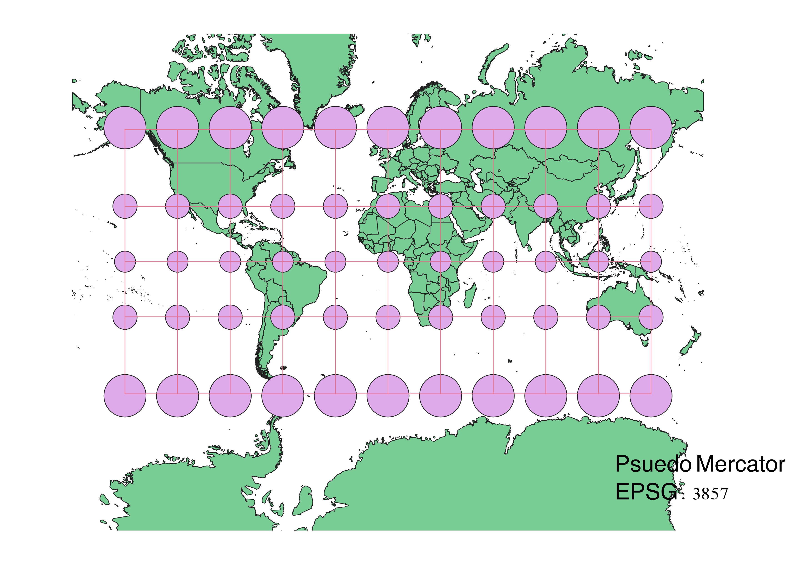
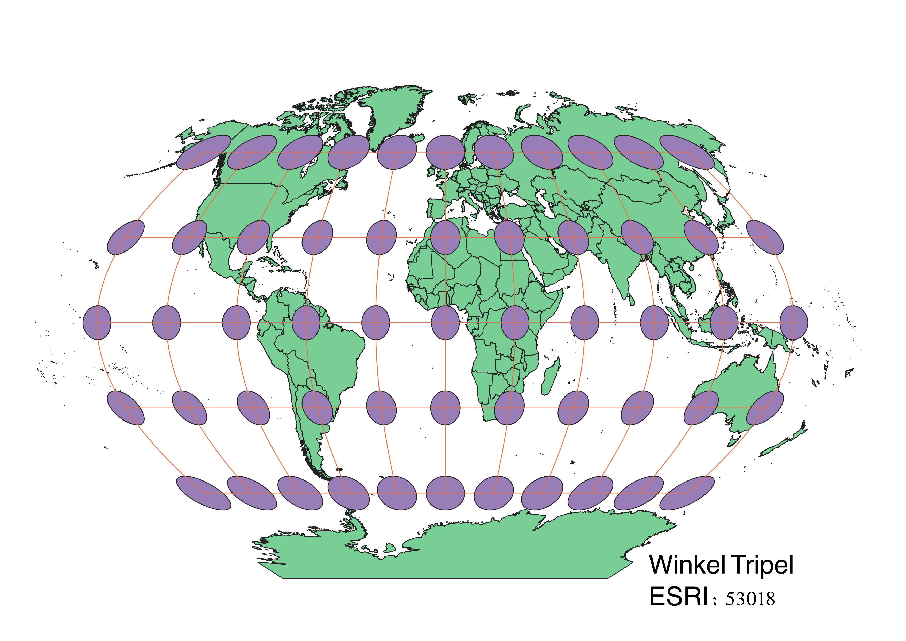
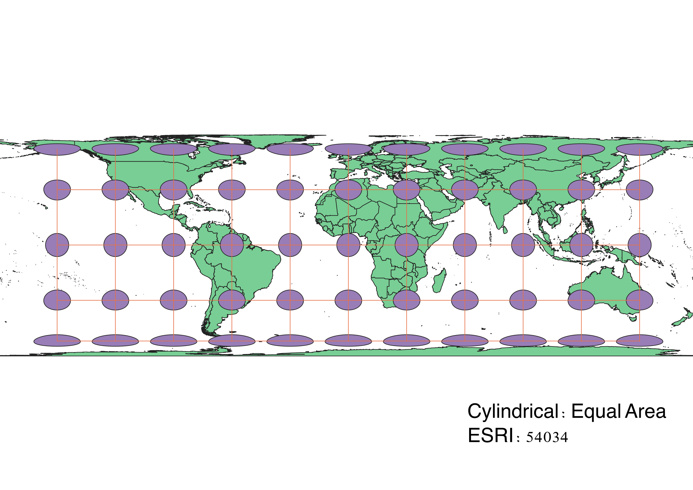
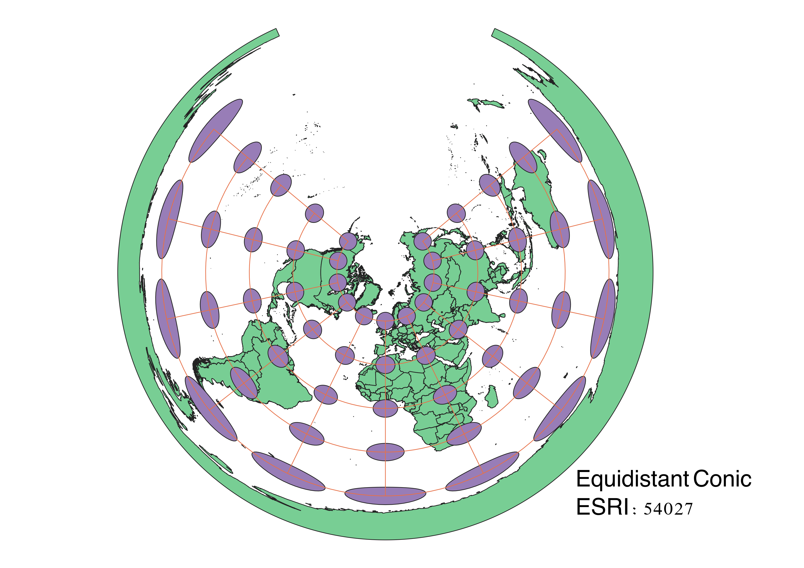
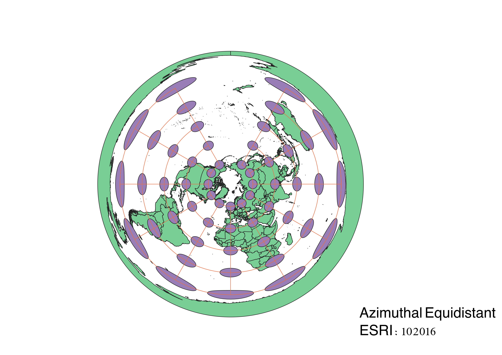
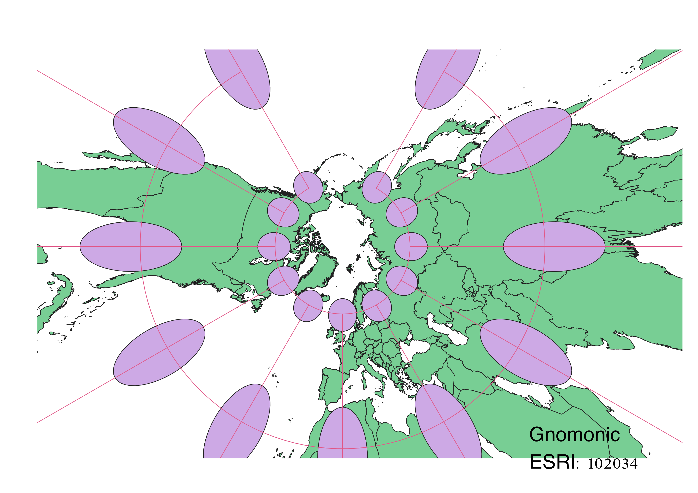
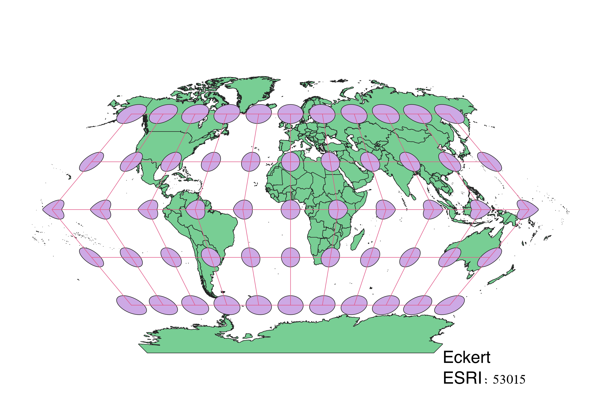

In this project I learned how to display images in different projections
These maps were displayed using QGIS and altering the projections for each map using the Project Coordinate Reference System. We demonstrated how different projections in maps, whether cyllindrical, conic, or azimuthal, portrays the world diffferently. We can show how different maps can optimize one element such as shape, area, angle, direction, or distance, and the trade offs that come with prioritizing certain elements.
WGS84 Projection
This is an Equivalent map because it conserves area. The poles are stretched and distorted in order to preserve this area.

Aitoff Projection
This is an Azimuthal projection that preserves distance. It is an ellipse and as you get further away from the center the circles begin to deform and stretch out. The most stretched caps are furthest away from the equator.

EPSG Projection
The Psuedo Mercator Map preserves the shape of the maps. You can tell it preserves shape because the circles of the caps are all still circles. Towards the poles the circles get larger because the map distorts area.

ESRI Projection
The Winkel Tripel projection is a cylindrical projection that preserves more area and scale because the cap circles remain the same size up to the poles, however, there is clear distortion in shape since the caps become more ellipsoids.

ESRI Projection
This is an Equivalent cylindrical map. The caps towards the poles are so stretched and shape is clearly distorted in order to preserve this area. This is used to keep the actual sizes of the land masses its portraying.

ESRI Projection
This map is an equidistant, conic projection. Equidistant means that it preserves distance in one direction. This map is good for navigational purposes like for a ship traveling through the sea. Additionally this is a conic map meaning its features were created using a cone. Conic maps distort area.

ESRI Projection
This is an Azimuthal projection meaning it is centered arouund a central point which for this map is the North Pole. This is also an equidistant map which preserves distance and direction from that central point but only in one direction. Otherwise, azimuthal projections distrot shapes and sizes.

ESRI Projection
This is the first projection I chose for this project. This is a Gnomonic map meaning it is centered around the North Pole.
The map is an Azimuthal Map Projection the preserves angle and distance is only preserved at the center point with all other dimensions also being distorted. This is best used for navigational purposes.
The information I used to learn about this map is linked down below.

ESRI Projection
This is my second projection I was able to pick out for this project. I picked it because I thought it was interesting the way the graticule lines formed a hexagon. This is an Eckert I projection is called a psuedocylindrical projection. Meridians are even with the equator in the middle. Shape, area, distance and direction are all distorted and this map has no clear use in mapping.

Now, you should add the following projections on your own:
EPSG: 3857, 53018, 54034, 54027, 102016, and two additional projections that you choose.
Data used for this project
Download Natrual Earth 1:10m Cultural Vector
Information on the Gnomonic Projection was found through this link